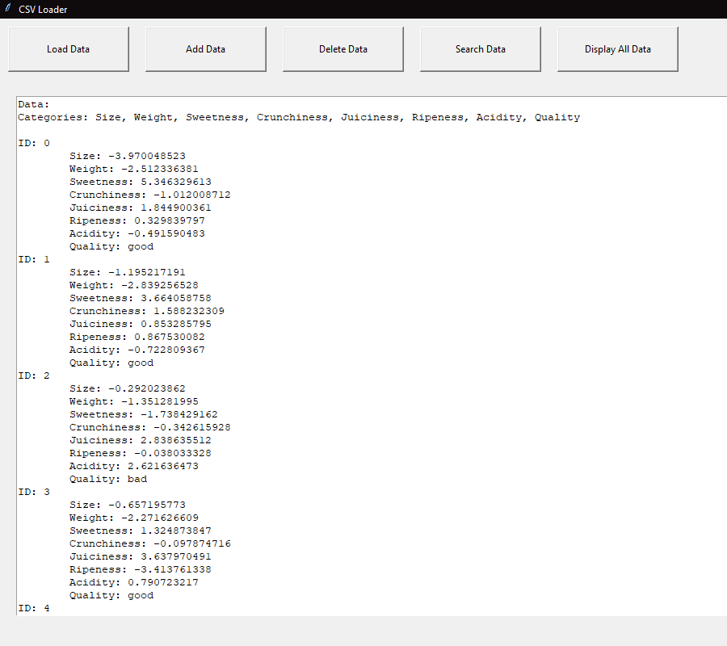

Apple Quality Management Application
This Python application utilizes Tkinter to create a graphical user interface for managing CSV data. Users can load, add, delete, search, and display data stored in CSV files. Key features include data manipulation functionalities like adding, deleting, and searching records, along with a user agreement dialog box for compliance. The application offers a simple and intuitive interface for efficient CSV data management.
Technical Instructions:
- To load data: Click on the "Load Data" button and select a CSV file.
- To add new data: Click on the "Add Data" button and enter the required information.
- To delete data: Click on the "Delete Data" button and enter the ID of the record to delete.
- To search for data: Click on the "Search Data" button and enter the ID to search for.
- To display all data: Click on the "Display All Data" button.

Download